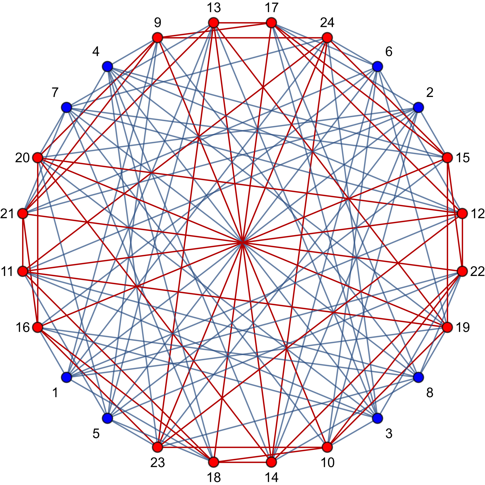

Riemann-Hilbert theory and asymptotics
Some textGeometry of monodromy manifolds
Some text
affine lines
Quantisation, value distributions and Nevanlinna theory
Some textOrthogonal polynomials on elliptic curves
In a recent collaboration with Harini Desiraju and Tomas Latimer, we introduced a new class of orthogonal polynomials on elliptic curves and studied their integrability.
description